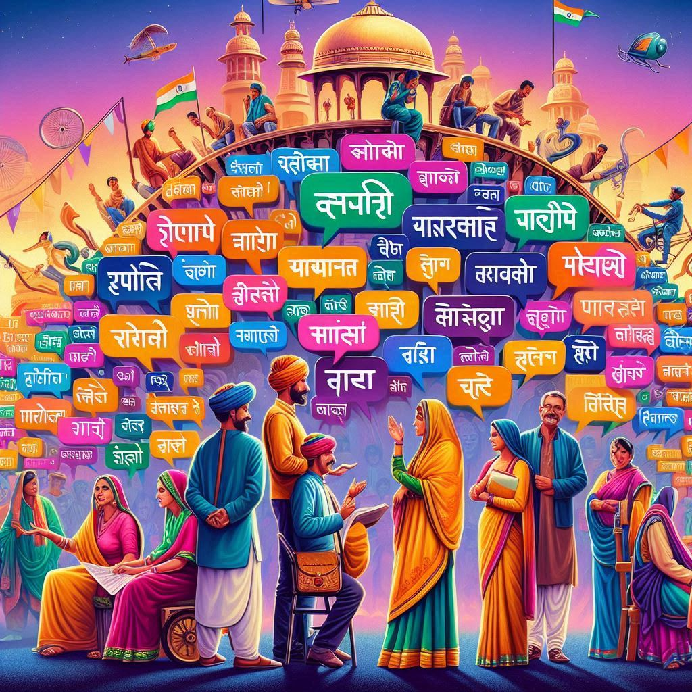

Languages of Rajasthan
Rajasthan is a linguistically diverse state, with a rich heritage of dialects and languages rooted in its culture and history. The people of Rajasthan primarily speak Indo-Aryan languages, with Rajasthani being the most significant linguistic family. Here are the key languages spoken in the state:
1. Rajasthani
- Primary Dialects:
- Marwari: Widely spoken in Jodhpur, Barmer, Jaisalmer, and Pali regions. It is the most prominent dialect of Rajasthan.
- Mewari: Common in Udaipur, Rajsamand, and Chittorgarh districts.
- Shekhawati: Spoken in Sikar, Jhunjhunu, and Churu regions.
- Dhundhari: Predominantly spoken in Jaipur, Ajmer, and Tonk.
- Bagri: Used in northern Rajasthan near the Haryana border.
- Significance: Rajasthani is a distinct linguistic family, though it is not officially recognized as an independent language in India and is considered a dialect of Hindi. It has a rich oral tradition with folk songs, tales, and poetry.
2. Hindi
- Hindi is the official language of Rajasthan and widely used for government, education, and media.
- Most of the population is fluent in Hindi, and it serves as a link language across different linguistic communities.
3. English
- English is widely used in urban areas, especially in education, business, and administrative sectors.
- It serves as a secondary language for communication, especially in formal and official settings.

4. Minority Languages
- Sindhi: Spoken by the Sindhi community, primarily in districts bordering Gujarat.
- Punjabi: Spoken by Punjabi communities, especially in areas close to Punjab.
- Urdu: Used by a section of the Muslim population, especially in cities like Jaipur and Ajmer.
Cultural Importance
Rajasthan's languages are closely tied to its culture, with folk songs, ballads, and storytelling traditions being an integral part of its identity. The vibrant linguistic tapestry reflects the state’s historical interactions with different communities and empires.
Conclusion
The linguistic diversity of Rajasthan adds to its rich cultural heritage. While Rajasthani dialects dominate, Hindi serves as a unifying language, ensuring seamless communication among its people.